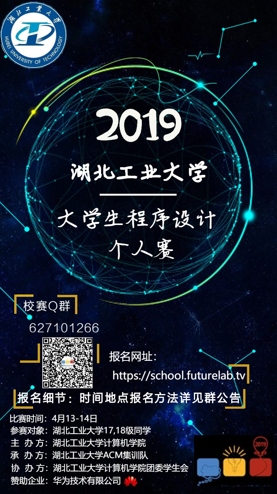

ACM Online Judge
Online Judge系统（简称OJ）是一个在线的判题系统。用户可以在线提交程序多种程序（如C、C++、Pascal）源代码，系统对源代码进行编译和执行，并通过预先设计的测试数据来检验程序源代码的正确性。


ACM国际大学生程序设计竞赛的历史可以上溯到1970年，当时在美国德克萨斯A&M大学举办了首届比赛。当时的主办方是the Alpha Chapter of the UPE Computer Science Honor Society。作为一种全新的发现和培养计算机科学顶尖学生的方式，竞赛很快得到美国和加拿大各大学的积极响应。1977年，在ACM计算机科学会议期间举办了首次总决赛，并演变成为一年一届的多国参与的国际性比赛。
比赛期间，每队使用1台电脑需要在5个小时内使用C/C++、Java和Python中的一种编写程序解决7到13个问题。程序完成之后提交裁判运行，运行的结果会判定为正确或错误两种并及时通知参赛队。而且有趣的是每队在正确完成一题后，组织者将在其位置上升起一只代表该题颜色的气球，每道题目第一支解决掉它的队还会额外获得一个“FIRST PROBLEM SOLVED”的气球
1.参赛队伍最多由三名参赛队员组成。 2.竞赛中命题10题左右，试题描述为英文，比赛时间为5个小时，前四个小时可以实时看到排名，最后一小时封榜，无法看到排名。 3.竞赛可以使用的语言：Java, C, C++, Kotlin 和 Python。 4.重点考察选手的算法和程序设计能力，不考察实际工程中常用的系统编程，多线程编程等等；
1、Accepted. ——通过！(AC) 2、Wrong Answer.——答案错。(WA) 3、Runtime Error.——程序运行出错，意外终止等。(RE) 4、Time Limit Exceeded. ——超时。程序没在规定时间内出答案。(TLE) 5、Presentation Error. ——格式错。程序没按规定的格式输出答案。(PE) 6、Memory Limit Exceeded. ——超内存。程序没在规定空间内出答案。(MLE) 7、Compile Error. ——编译错。程序编译不过。(CE)
国际大学生程序设计竞赛（英文全称：International Collegiate Programming
Contest（简称ICPC））是由国际计算机协会（ACM）主办的，一项旨在展示大学生创新能力、
团队精神和在压力下编写程序、分析和解决问题能力的年度竞赛。
经过近40年的发展，ACM国际大学生程序设计竞赛已经发展成为全球最具影响力的大学生程序设计竞赛